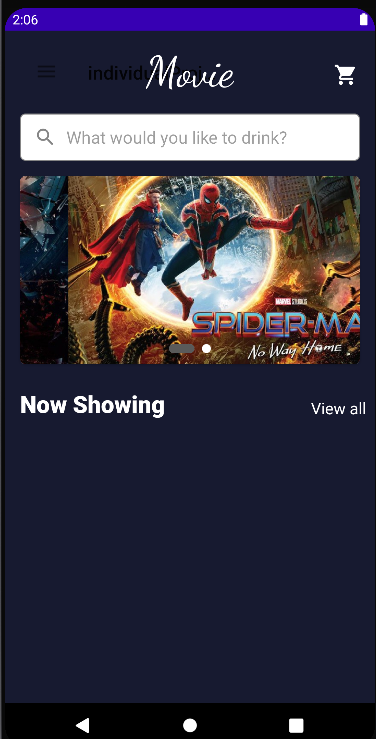

CAREER GOAL & PLAN
During the study in the institute of Vocational Education for Higher Diploma in AI and Mobile Applications Development. I learned a lot of computer-related skills, such as building websites, developing applications and databases, etc., which can help me to have more options for future jobs.

For future learning goals, I am interested to work in information technology fields in the future especially in programming.
In the future, I will apply for IT-related university courses to learn more professional knowledge and improve my IT skills. At the same time, it will be easier to meet friends in college life, so it will help expand my social circle and improve my communication skills.
REFLECTIVE LIFELONG LEARNER
So far in this advanced course, my team members and I have completed four projects with good grades, including two Android application projects, a website and a small AI project. I showed my teamwork skills.
Before doing project, we all need to discuss, including establishing the theme, work assignment, function, database design and so on. What I didn't expect was that I could participate in discussions and express opinions very well. Because I am relatively introverted and don't like to talk very much, my participation in discussions in the past was very low.
During the internship, my job is mainly IT support. For example, some program code problems or order data errors will be discussed. It made me realize that IT work requires not only IT skills, but also good communication skills. So, I will have more discussions with my team members to improve my communication skills. It can be of greater help to me in IT work in the future.
SELF-DIRECTED LIFELONG LEARNER
I want to play the piano. Although I have no idea of becoming a professional pianist. But the reason why I play the piano is that it can relieve the stress in life, because when I play the piano, I only focus on the keys and notes, and don't worry about other things. And I think someone who can play the piano is a cool thing. At the same time, the piano can exercise the mind, such as persistence, patience and calmness. This will help me in the future IT development, because both debugging and learning new technologies require persistence and patience. So I set aside 1-2 hours a day to practice playing the piano.

SELF-BRANDING
This is a personal website made with Python and Django. The purpose of doing this website is to strengthen my web development skills. In addition, this website stores some books I have read.
This is a personal project, the purpose of this app is to buy movie tickets. Features include checking for bookable movie tickets and displaying popular movies. After completing this project, I have a better understanding of the knowledge of developing Android App.
